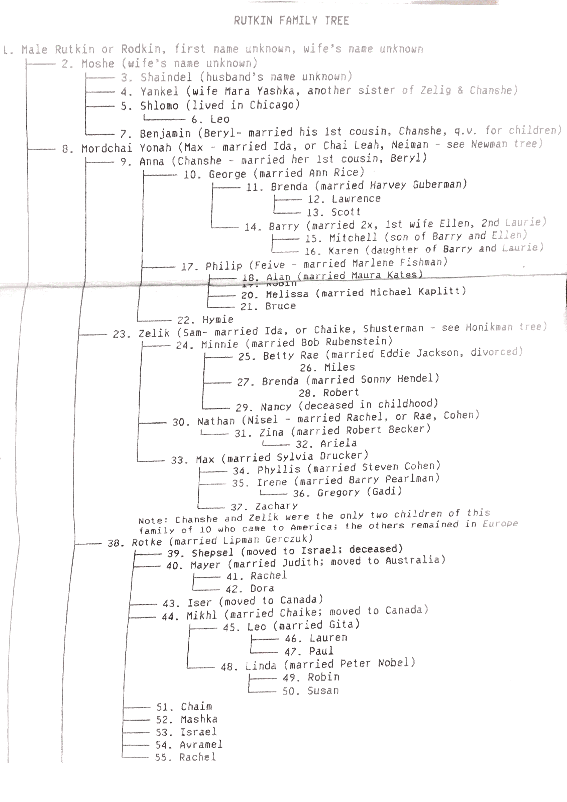
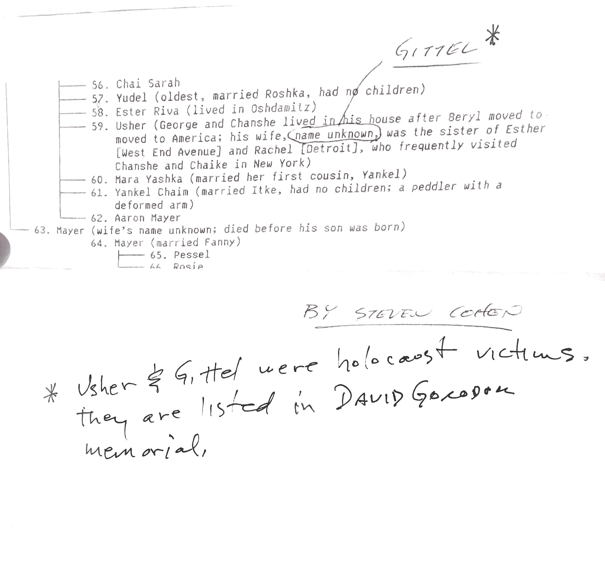

Nisel Rutkin gifted this family tree to one of my brothers on the occasion of his bar mitzvah.
I am posting the tree online in case there are other Rutkins out there who are looking to learn more about their ancestry.
The last name Rutkin is sometimes recorded in government documents as Rotkin or Rodkin. Documents for my great-grandparents note their birthplace as Dawid Grodek (alt. Davyd-Haradok), in modern Belarus, formerly Poland or Russia. There is a book, published in 1957, that memorializes life in Dawid Grodek before WWII.
This document appears to have been put together in the late 1980s. It references separate trees for the Newman and Honikman families, but I do not have copies of these.
I am interested in expanding and updating this document. If you have information to add to the tree, please get in touch.  